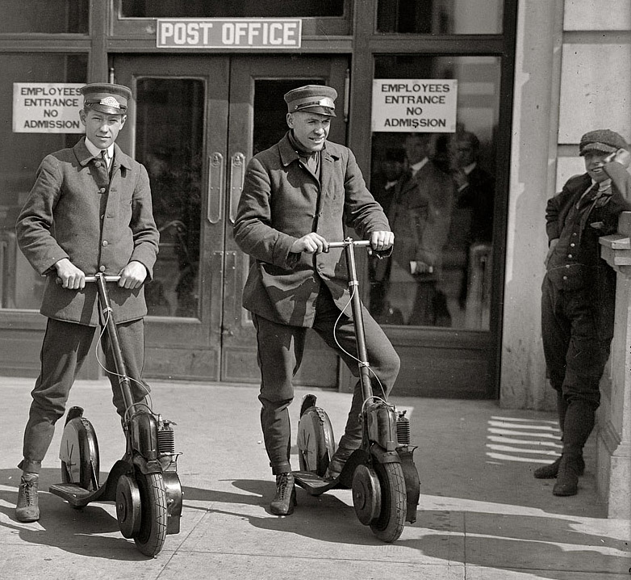

1 марта 2023 года в РФ был принят закон об электросамокатах, приравнивающий их к транспортным средствам.
Теперь ПДД относят электросамокаты к так называемым "средствам индивидуальной мобильности", или СИМ. Это транспортные средства с двигателем, который приводит в движение одно или несколько колес или роликов: электросамокаты, электровелосипеды, электроскейтборды, гироскутеры, сегвеи, моноколеса и другой аналогичный транспорт. Мощность двигателя не имеет значения: если он есть, самокат или велосипед считают СИМ.
На средствах индивидуальной мобильности нельзя передвигаться быстрее 25 км/ч, при этом на них должны быть фары или фонари.

На человека, который управляет СИМ, не распространяются общие обязанности водителей:
- Он не должен предъявлять документы.
- За нарушения ПДД отвечает как пешеход.
- Если уедет с места ДТП, его не привлекут к ответственности.
В возрасте от 7 до 14 лет на СИМ можно ездить по пешеходным и велосипедным дорожкам, тротуарам и в пределах пешеходных зон. Там же могут передвигаться дети младше 7 лет, но только в сопровождении взрослых.
В возрасте старше 14 лет на СИМ тяжелее 35 кг и велосипедах нужно двигаться по велосипедным и велопешеходным дорожкам, проезжей части велосипедной зоны или полосе для велосипедистов. Если такой инфраструктуры нет или она недоступна, можно двигаться по обочине, а если нет и ее — по правой стороне проезжей части.
На электросамокатах и аналогичном транспорте массой не выше 35 кг можно ездить в пешеходных зонах. А также по тротуарам и пешеходным дорожкам — но только в следующих случаях:
-
Когда невозможно двигаться по велосипедным, велопешеходным дорожкам и полосе для велосипедистов. Если есть тротуар или пешеходная дорожка, на таком самокате выезжать на обочину или проезжую часть нельзя.
- Если нужно сопровождать ребенка младше 14 лет, который тоже едет на СИМ.
Для движения по проезжей части на СИМ должны быть тормоза, звуковой сигнал, фары белого цвета и световозвращатели — белые спереди и красные сзади. Кроме того, по новым правилам СИМ могут двигаться только на дорогах, где разрешено движение велосипедистов и скорость ограничена 60 км/ч.